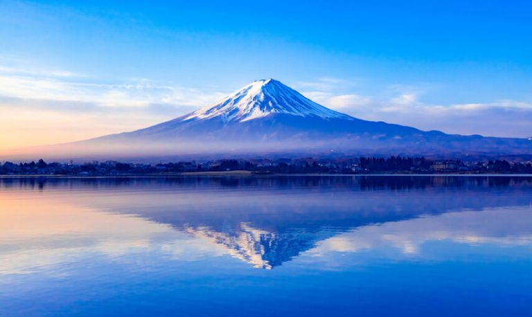
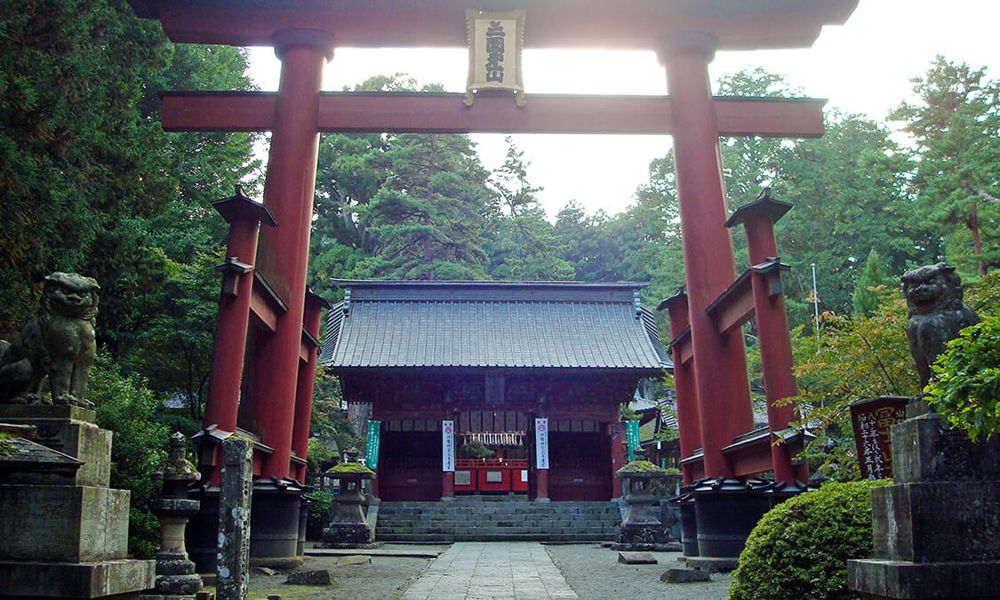

NÚI PHÚ SĨ - ĐỊA ĐIỂM TÂM LINH, BIỂU TƯỢNG VĂN HÓA VÀ KỲ QUAN ĐỊA LÝ
Sừng sững ở độ cao 3.776 mét, Núi Phú Sĩ là đỉnh núi cao nhất ở Nhật Bản, kết quả của hoạt động núi lửa đã bắt đầu từ khoảng 100.000 năm trước. Ngày nay, Núi Phú Sĩ và khu vực xung quanh là một điểm đến giải trí phổ biến cho hoạt động đi bộ đường dài, cắm trại và thư giãn.Là một trong những biểu tượng nổi tiếng nhất nước Nhật, khách du lịch từ khắp nơi trên thế giới đổ về tỉnh Shizuoka và Yamanashi để ngắm nhìn ngọn núi hùng vĩ này. Tuy nhiên, đối với người Nhật, Núi Phú Sĩ từ lâu đã là một địa điểm tâm linh rất quan trọng và là nguồn cảm hứng nghệ thuật.
Vị trí núi Phú Sĩ
MỘT BIỂU TƯỢNG VĂN HÓA
Những hình ảnh mang tính biểu tượng nhất của Núi Phú Sĩ có từ thời Edo (1603–1867). Loạt tác phẩm mộc bản của họa sĩ Ando Hiroshige về Núi Phú Sĩ khắc họa ngọn núi từ nhiều góc nhìn và khung cảnh khác nhau, cho mọi người từ khắp nơi trên thế giới một cái nhìn thoáng qua về khu vực và địa thế của ngọn núi. Tương tự, người ta cho rằng các tác phẩm mộc bản của họa sĩ bậc thầy Katsushika Hokusai đã tạo ảnh hưởng đến họa sĩ phương tây Vincent Van Gogh và thậm chí tác động đến cả nhà soạn nhạc Claude Debussy. Cảnh sắc đẹp như tranh vẽ của Núi Phú Sĩ được phổ biến trong thời Edo đã giúp củng cố di sản của ngọn núi như một điểm thu hút toàn cầu.
MỘT BIỂU TƯỢNG CỦA SỰ TÔN SÙNG
Trong nhiều thế kỷ, người Nhật đã tạo nên một mối liên kết tâm linh với ngọn núi này. Truyền thuyết kể rằng nhà tu khổ hạnh nổi danh Hasegawa Kokugyo (1541–1646) đã leo lên đỉnh núi hơn 100 lần. Thành tích này của ông đã dẫn đến sự hình thành Fuji-ko, một nhóm những người tôn thờ Núi Phú Sĩ. Giáo phái này đã xây dựng các đền thờ, tạo ra các tượng đài đá và nhịn ăn để thể hiện sự tôn thờ của họ. Lòng trung thành đến mức cuồng tín của họ cuối cùng đã khiến Mạc phủ Tokugawa cấm tín ngưỡng này, dù vậy, truyền thống thờ phụng ngọn núi lâu đời này của Nhật Bản đã giữ cho ngọn núi vẫn được sùng bái và tôn kính như một địa điểm tâm linh quan trọng.
MỘT ĐỊA ĐIỂM HÀNH HƯƠNG
Hơn 300.000 người leo lên Núi Phú Sĩ vào mỗi mùa hè. Bốn con đường mòn chính là bốn lộ trình khác nhau để leo đến đỉnh, dừng lại ở các khu vực nghỉ ngơi hay còn gọi là các “trạm”, cung cấp các tiện nghi và chỗ ở dọc đường đi. Hầu hết những người leo núi muốn ngắm mặt trời mọc nên họ sẽ leo trong khoảng thời gian nửa đêm về sáng để kịp ngắm mặt trời nhô lên khỏi đường chân trời từ đỉnh núi. Trong thời tiền hiện đại, Núi Phú Sĩ là một nơi khổ luyện cho các nhà sư và ngay cả các tầng lớp thấp hơn cũng đã hành hương đến đây. Vô số đền thờ dưới chân núi là một minh chứng cho ý nghĩa lịch sử và tâm linh của Núi Phú Sĩ.
MỘT KỲ QUAN ĐỊA LÝ
Được hình thành khoảng 100.000 năm trước, các vụ phun trào núi lửa liên tục đã dần biến Núi Phú Sĩ thành ngọn núi lớn nhất Nhật Bản, cao 3.776 mét. Vụ phun trào cuối cùng vào năm 1707 kéo dài trong 16 ngày và tro bụi núi lửa đã lan đến tận Tokyo. Hoạt động núi lửa cũng tạo ra Hoeizan (một trong những đỉnh thấp hơn của Núi Phú Sĩ), năm hồ nước ở chân núi và nhiều hang động gần Rừng Aokigahara. Khu vực này cũng được thiên nhiên ưu ái với nhiều suối nước nóng giàu khoáng chất, giúp khu vực trở thành thiên đường cho cả hoạt động giải trí ngoài trời lẫn thư giãn.

Những địa điểm hấp dẫn khác quanh núi Phú Sĩ.
Hồ Kawaguchi, một trong Phú Sĩ Ngũ Hồ.

Ngôi làng cổ Oshino Hakkai.

@ Nguồn: japan.travel